Botswana General Certificate of Secondary Education: Mathematics: Paper 2
The Joy of the Teacher is the Success of the
Students.
– Samuel Chukwuemeka
Welcome to Our Site
I greet you this day,
These are the solutions to the BGCSE Mathematics Paper 2 questions.
Please review the Formulas, rules/laws, and theorems on the website for each topic as applicable.
If time permits and there is sufficient interest, video solutions may be provided. Please subscribe to the
YouTube channel to be notified
of upcoming livestreams.
You are welcome to ask questions during the video livestreams.
If you find these resources valuable and if any of these resources were helpful in your passing the
Mathematics tests/exams, please consider making a donation:
Your donation is appreciated.
Comments, ideas, areas of improvement, questions, and constructive
criticisms are welcome.
Feel free to contact me. Please be positive in your message.
I wish you the best.
Thank you.
Botswana Examinations Council
Botswana General Certificate of Secondary Education
Mathematics
Paper 2
Candidates answer on the Question Paper.
No Additional Materials are required.
2 hours
Instructions
(1.) Write your name, Centre number and candidate number in the spaces provided at the top of this page.
(2.) Answer all questions.
(3.) Write your answers in the spaces provided on the question paper.
(4.) If working is needed for any question, it must be shown below that question. Omission of essential working
will result in the loss of marks.
(5.) Do not use staples, paper clips, highlighters, glue or correction fluid.
(6.) If the degree of accuracy is not specified in the question and if the answer is not exact, the answer
should be given to three significant figures.
Answers in degrees should be given to one decimal place.
(7.) In any question where the value of π is required, use the value from your calculator or take π as
3.142.
Information
(1.) The number of marks for each question or part question is shown in brackets [ ].
(2.) The total mark for this paper is 75.
(3.) Electronic calculators may be used.
Because electronic calculators are permitted, the TI-84 Plus CE calcuator will be used.
Formula Sheet: Information and Formulae
(1.) In an election, three candidates, Janice, Kris and Loma received a total 225 630 votes.
Janice received 110 000 votes.
(a.) Percent Applications: Express the number of votes Janice received as a percentage of the total
votes.
(b.) Data Presentation: Pie Chart: The proportion of votes each candidate received is represented in a
pie chart.
The sector angle representing Kris's votes in 16°.
Calculate the number of votes Kris received.
(c.) How many votes did Loma receive?
(2.) Measurements and Units: A copper pipe, 1m long, has a mass of 3.9kg.
What is the mass of a 0.25m length of this pipe?
$
\underline{\text{Unity Fraction Method}} \\[3ex]
\text{Set up units:} \\[3ex]
0.25m \times \dfrac{...kg}{...m} \\[5ex]
\text{Set up measurements and units:} \\[3ex]
0.25m \times \dfrac{3.9kg}{1m} \\[5ex]
= 0.975kg
$
(3.) Mathematics of Finance: Mmapula pays for the connection to the national electricity grid.
She pays the same amount each month for 18 months with interest.
(a.) Each month, Mmapula pays P274.56 plus 4.78% interest.
Work out how much Mmapula pays each month.
(b.) Calculate the total amount Mmapula pays for 18 months.
(4.) Mensuration: A rectangular sports field measuring 80m by 120m is to be covered with artificial turf.
(a.) Calculate the area of the field.
(b.) The artificial turf sold as rectangular pieces, each measuring 1.6m by 2m.
How many pieces of artificial turf are required to cover the field completely?
(c.) Each piece of artificial turf costs P329.50.
Calculate the total cost of the turf.
$
(a.) \\[3ex]
\underline{\text{Rectangular Sports Field}} \\[3ex]
\text{Area of the field} = 80 \times 120 \\[3ex]
= 9600m^2 \\[5ex]
(b.) \\[3ex]
\underline{\text{Rectangular Pieces of Artificial Turf}} \\[3ex]
\text{Area of each artificial turf} = 1.6 \times 2 \\[3ex]
= 3.2m^2 \\[3ex]
\text{Number of artificial turf required to completely cover the field} \\[3ex]
= \dfrac{\text{Area of the field}}{\text{Area of each artificial turf}} \\[5ex]
= \dfrac{9600}{3.2} \\[5ex]
= 3000\text{ pieces} \\[5ex]
(c.) \\[3ex]
\text{Total cost of the surf} \\[3ex]
= \text{Cost of 3000 pieces of turf} @ \;\;P329.50 \text{ per turf} \\[3ex]
= 3000 \times 329.50 \\[3ex]
= P988500
$
(5.) Kinematics: A car travels from town A to town B, a distance of 56km.
The car leaves town A and travels at a constant speed covering 40km in 30 minutes.
It then had a breakdown and stops for 15 minutes.
After the breakdown, the car continues at a constant speed for another 10 minutes to reach town B.
(a.) Draw a distance-time graph to represent the journey from town A to town B.
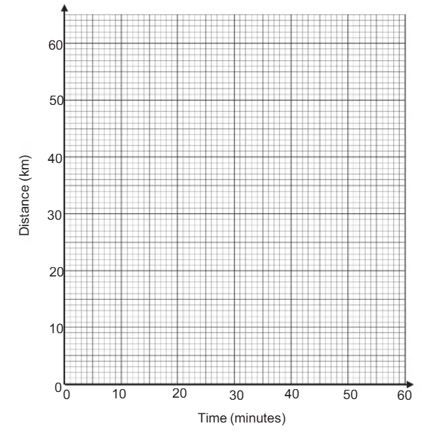
(b.) What happens to the speed of the car after the breakdown?
(time, distance)
Before Breakdown
From town A: (0, 0)
distance = 40km
time = 30 minutes
(30, 40)
During Breakdown
Stops for 15 minutes; no distance covered.
distance = 40km
time = 30 + 15 = 45 minutes
(45, 40)
After Breakdown
The car continues at a constant speed for another 10 minutes to reach town B.
Reaches town B, a distance of 56km from town A
total distance = 56km
time = 45 + 10 = 55 minutes
(55, 56)
The distance-time graph to represent the journey from town A to town B is drawn as shown:
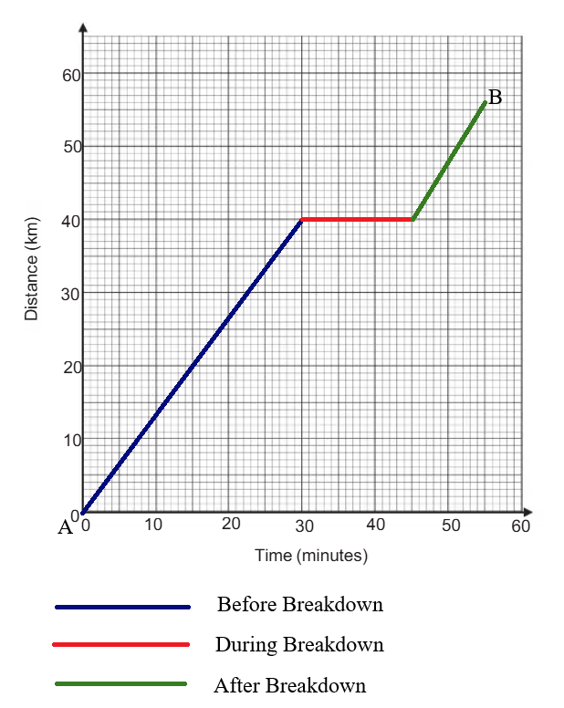
$
s.......t.......d \\[3ex]
\text{speed, }s \times \text{ time, }t = \text{ distance, }d \\[3ex]
s = \dfrac{d}{t} \\[5ex]
(b.) \\[3ex]
\text{Before Breakdown: } (30, 40) \\[3ex]
d = 40km \\[3ex]
t = 30min \\[3ex]
= 30min \times \dfrac{1hr}{60min} = 0.5hr\\[5ex]
s = \dfrac{40}{0.5} = 80km/hr \\[5ex]
\text{During Breakdown: } (45, 40) \\[3ex]
s = 0km/hr \quad\text{the car stopped} \\[5ex]
\text{After Breakdown: } (55, 56) \\[3ex]
d = 56 - 40 = 16km \\[3ex]
t = 10min \\[3ex]
= 10min \times \dfrac{1hr}{60min} = \dfrac{1}{6}hr \\[5ex]
s = 16 \div \dfrac{1}{6} \\[5ex]
= 16 \times 6 \\[3ex]
= 96km/hr \\[3ex]
$
After the breakdown, the speed of the car increased to 96km/hr
(6.) Trigonometry: Bearings and Distances: The diagram represents the positions of a tower, T, a
waterhole W and campsite C.
The campsite is 5.2km from the tower on a bearing of 134°.
The waterhole is 6.8km from the campsite on a bearing of 044°.
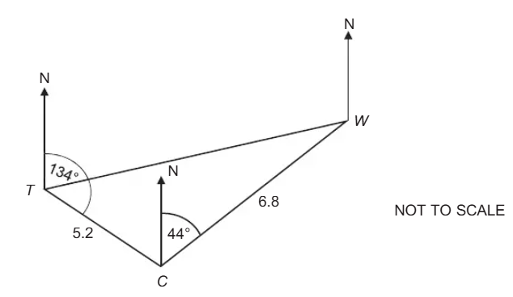
(a.) Show that the size of angle TCW is 90°
(b.) Calculate the bearing of the waterhole, W, from the tower, T.
Let us do some constructions as shown in the diagram
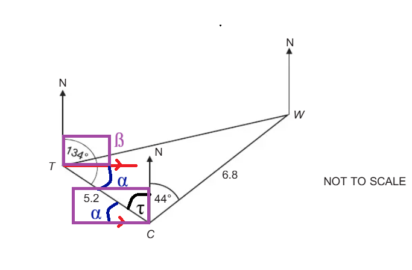
$
\underline{\text{Diagram}} \\[3ex]
\beta = 90^\circ \quad(\text{Right Angle}) \\[3ex]
\alpha + \beta = 134^\circ \\[3ex]
\alpha + 90 = 134 \\[3ex]
\alpha = 134 - 90 \\[3ex]
\alpha = 44^\circ \\[5ex]
\underline{\text{Angle Between Parallel Lines}} \\[3ex]
\alpha = \alpha = 44^\circ \quad(\text{alternate angles are equal}) \\[5ex]
\underline{\text{Diagram}} \\[3ex]
\alpha + \tau = 90^\circ \quad(\text{Right Angle}) \\[3ex]
\tau = 90 - \alpha \\[3ex]
= 90 - 44 \\[3ex]
= 46^\circ \\[5ex]
(a.) \\[3ex]
\angle TCW = \tau + 44^\circ \\[3ex]
= 46 + 44 \\[3ex]
= 90^\circ \\[5ex]
(b.) \\[3ex]
\triangle TCW \text{ is a right triangle} \\[3ex]
\tan \angle WTC = \dfrac{opp}{adj} \quad(\text{SOHCAHTOA}) \\[5ex]
\tan \angle WTC =\dfrac{6.8}{5.2} \\[5ex]
\angle WTC = \tan^{-1} \left(\dfrac{6.8}{5.2}\right) \\[5ex]
\angle WTC = 52.59464337^\circ \\[3ex]
$
The bearing of the waterhole, W, from the tower, T is angle φ as shown in the diagram
(7.) Mensuration: The diagram represents a bar of chocolate in the form of a prism with a trapezium
cross-section, ABCD.
The height of the chocolate bar is 1.2cm and its length is 18cm. AB = 7.5cm and CD = 10cm.
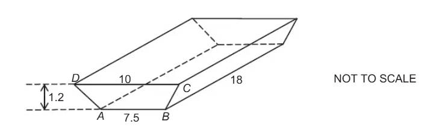
Calculate
(a.) the area of cross-section, ABCD
(b.) the volume of the chocolate bar,
(c.) the number of chocolate bars that can be made using 5 litres of chocolate.
The prism is a trapezoidal prism (base is a trapezoid/trapezium).
It is lying down rather than standing up.
The length (when it is lying down) is the same as the height (when it is standing up).
$
(a.) \\[3ex]
\underline{\text{Trapezium } ABCD} \\[3ex]
\text{A} = \dfrac{h(c + d)}{2} \\[3ex]
\text{where} \\[3ex]
A = \text{area} \\[3ex]
h = \perp\text{ height} = 1.2\;cm \\[3ex]
c = \text{length of the first parallel side} = 7.5\;cm \\[3ex]
d = \text{length of the second parallel side} = 10\;cm \\[3ex]
A = \dfrac{1.2(7.5 + 10)}{2} \\[5ex]
= 10.5\;cm^2 \\[5ex]
(b.) \\[3ex]
\underline{\text{Trapezoidal Prism}} \\[3ex]
V = BA \times H \\[3ex]
\text{where} \\[3ex]
V = \text{Volume} \\[3ex]
BA = \text{Base Area} = \text{Area of the Trapezium base} = 10.5\;cm^2 \\[3ex]
H = \text{height when standing up} = \text{length when lying down} = 18\;cm \\[3ex]
V = 10.5 \times 18 \\[3ex]
V = 189\;cm^3 \\[3ex]
$
1 chocolate bar has a volume of $189\;cm^3$
How many chocolate bars can be made using 5 litres of chocolate?
This means: How many chocolate bars will have a volume of 5 litres?
$
(c.) \\[3ex]
5\text{ litres of chocolate} = 5\;dm^3 \text{ of chocolate} \\[3ex]
\text{How many 189 $cm^3$ is in 5 $dm^3$}? \\[3ex]
= \dfrac{5\;dm^3}{189\;cm^3} \\[5ex]
...................................................................... \\[3ex]
189\;cm^3 \text{ to } dm^3 \\[3ex]
cm^3 = cm \cdot cm \cdot cm \\[3ex]
1\;cm = 10^{-2}\;m \quad[\text{centi = $10^{-2}$}] \\[3ex]
1\;dm = 10^{-1}\;m \quad[\text{deci = $10^{-1}$}] \\[3ex]
\underline{\text{Unity Fraction Method}} \\[3ex]
\text{Set up units:} \\[3ex]
cm \cdot cm \cdot cm \cdot \dfrac{...m}{...cm} \cdot \dfrac{...m}{...cm} \cdot \dfrac{...m}{...cm}
\cdot \dfrac{...dm}{...m} \cdot \dfrac{...dm}{...m} \cdot \dfrac{...dm}{...m} \\[5ex]
\text{Set up measurements and units:} \\[3ex]
= 189\;cm \cdot cm \cdot cm \cdot \dfrac{10^{-2}\;m}{1\;cm} \cdot \dfrac{10^{-2}\;m}{1\;cm}
\cdot \dfrac{10^{-2}\;m}{1\;cm} \cdot \dfrac{1\;dm}{10^{-1}\;m} \cdot \dfrac{1\;dm}{10^{-1}\;m}
\cdot \dfrac{1\;dm}{10^{-1}\;m} \\[5ex]
= \dfrac{189 \cdot 10^{-2 + (-2) + (-2)}}{10^{-1 + (-1) + (-1)}} dm^3 \quad[\text{Law 1 Exp}] \\[5ex]
= \dfrac{189 \cdot 10^{-6}}{10^{-3}} dm^3 \\[5ex]
= 189 \cdot 10^{-6 - (-3)} \quad[\text{Law 2 Exp}] \\[3ex]
= 189 \cdot 10^{-3} \\[3ex]
= 189 \cdot 0.001 \\[3ex]
= 0.189\;dm^3 \\[3ex]
...................................................................... \\[3ex]
= \dfrac{5\;dm^3}{0.189\;dm^3} \\[5ex]
= 26.45502646 \\[3ex]
\approx 26.5\text{ chocolate bars} \quad[\text{to three significant figures}]
$
(8.) Geometry Transformations: The diagram shows triangle L.
Draw the image of triangle L after a reflection in the y-axis.
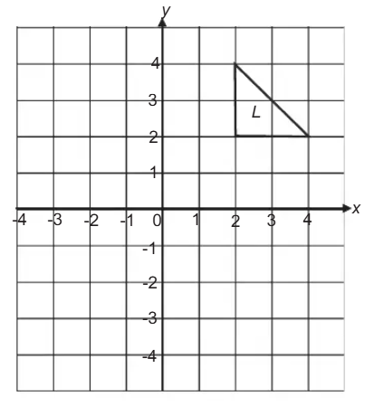
Reflection in the y-axis is also known as Horizontal Reflection.
This means that for each point on the object, the x-coordinate changes while the y-coordinate
remains.
The x-value of the image is the opposite x-value of the object.
Say the vertices of triangle L are points A, B, C
$
A(2, 4) \rightarrow A'(-2, 4) \\[3ex]
B(2, 2) \rightarrow B'(-2, 2) \\[3ex]
C(4, 2) \rightarrow C'(-4, 2) \\[3ex]
$
The triangle and its reflected image is:
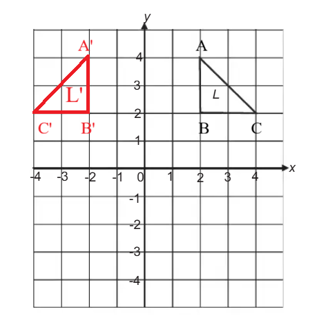
(9.) Fractions: Express $\dfrac{3}{2x + 1} + \dfrac{1}{x - 1}$ as a single fraction in its simplest form.
(10.) Mensuration: The diagram represents a solid triangular-based pyramid, JMKL.
Angle JML = angle KML = angle JMK = 90°.
$JM = KM = LM = 12\;cm$
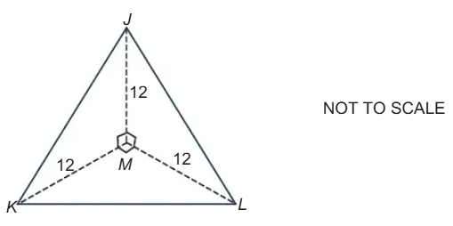
(a.) What is the geometrical relationship between triangle JMK, triangle JML and triangle
KML?
(b.) Calculate
(i.) the length of JK,
(ii.) the total surface area of the pyramid.
(a.) The geometrical relationship between triangle JMK, triangle JML and triangle
KML is that they are congruent triangles by the reason of SAS (Side-Angle-Side).
Two sides and an included angle (a right angle) of one triangle are equal to the corresponding sides and
angle of the other triangles.
$
(b.) \\[3ex]
\underline{\text{Right Triangle } JMK} \\[3ex]
|JK|^2 = |JM|^2 + |MK|^2 \quad[\text{Pythagorean Theorem}] \\[3ex]
= 12^2 + 12^2 \\[3ex]
= 144 + 144 \\[3ex]
= 288 \\[3ex]
|JK| = \sqrt{288} \\[3ex]
= 16.97056275 \\[3ex]
\approx 17.0\;cm \quad[\text{to three significant figures}] \\[3ex]
$
The total surface area of the pyramid is the sum of the base area and the lateral area.
That triangular-based pyramid has a right-triangle base and three lateral faces.
(11.) Literal Equations: Re-arrange the formula $q = \dfrac{3p + r}{p}$ to make p the subject.
$
q = \dfrac{3p + r}{p} \\[5ex]
LCD = p \\[3ex]
\text{Multiply both sides by the LCD} \\[3ex]
pq = 3p + r \\[3ex]
\text{Subtract $3p$ from both sides} \\[3ex]
pq - 3p = r \\[3ex]
\text{Factor the LHS by GCF} \\[3ex]
GCF = p \\[3ex]
p(q - 3) = r \\[3ex]
\text{Divide both sides by $(q - 3)$} \\[3ex]
p = \dfrac{r}{q - 3}
$
(12.) Linear Functions: Find the equation of the line parallel to $y = 2x + 5$, passing through the point
$(-2, -3)$.
$
\underline{\text{Line 1}} \\[3ex]
y = 2x + 5 \\[3ex]
\text{Compare to the Slope – Intercept Form: } y = mx + b \\[3ex]
\text{slope, } m = 2 \\[3ex]
m_1 = \text{slope of Line 1} = m = 2 \\[5ex]
\underline{\text{Line 2}} \\[3ex]
m_2 = \text{slope of Line 2} = m_1 = 2 \quad[\text{parallel lines have the same slope}] \\[3ex]
\text{Passes through Point } (-2, -3) \\[3ex]
x_2 = -2 \\[3ex]
y_2 = -3 \\[3ex]
y - y_2 = m_2(x - x_2) \quad[\text{Point – Slope Form}] \\[3ex]
y - (-3) = 2[x - (-2)] \\[3ex]
y + 3 = 2(x + 2) \\[3ex]
y = 2x + 4 - 3 \\[3ex]
y = 2x + 1
$
(13.) Quadratic Functions: The table shows some values of x and the corresponding values of
y for $y = 3 - 2x - x^2$.
$x$
$-4$
$-3$
$-2$
$-1$
$0$
$1$
$2$
$y$
$-5$
$0$
$3$
$4$
$3$
$0$
$-5$
(a.) Draw the graph of $y = 3 - 2x - x^2$ for values of x from −4 to 2.
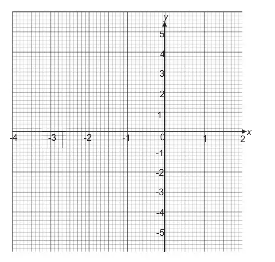
(b.) Use the graph to solve the equation $3 - 2x - x^2 = 0$.
(a.) The graph of $y = 3 - 2x - x^2$ for values of x from −4 to 2 is:
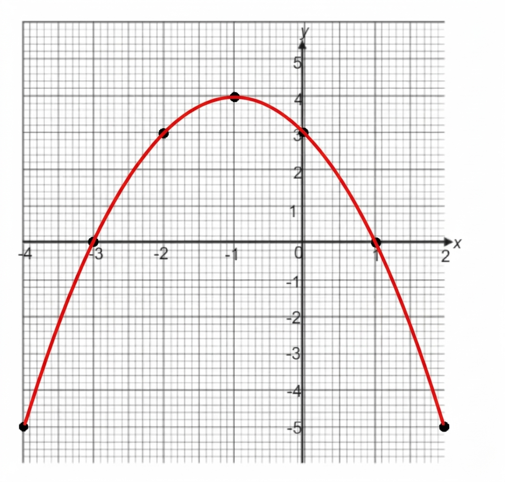
(b.) Using the graph to solve the equation $3 - 2x - x^2 = 0$:
The roots of the equation are the x-values of the x-intercepts
(the values where the graph crosses the x-axis)
These are: $x_1 = -3$ and $x_2 = 1$
(14.) Statistics: Data Presentation: Histogram: The histogram represents the amounts of money that
customers paid at a supermarket one morning.
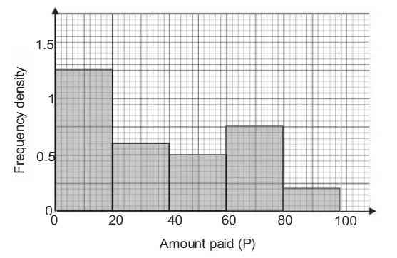
(a.) How many customers paid P20 or less?
(b.) How many customers in total, bought goods at the supermarket that morning?
Class Width = Lower Class Interval of Next Class − Lower Class Interval of Current Class
Frequency Density
Frequency = Class Width × Frequency Density
$0 - 20$
$20 - 0 = 20$
$1.25$
$20 \times 1.25 = 25$
$20 - 40$
$40 - 20 = 20$
$0.6$
$20 \times 0.6 = 12$
$40 - 60$
$60 - 40 = 20$
$0.5$
$20 \times 0.5 = 10$
$60 - 80$
$80 - 60 = 20$
$0.75$
$20 \times 0.75 = 15$
$80 - 100$
$100 - 80 = 20$
$0.2$
$20 \times 0.2 = 4$
The number of customers is the Frequency.
(a.) 25 customers paid P20 or less (1st class)
(b.) The total number of customers that bought goods at the supermarket that morning are:
$25 + 12 + 10 + 15 + 4 = 66$ customers
(15.) Statistics: Measures of Center: Median: These are the times, in minutes, spent by 10 people in a
queue at a store.
(16.) Kinematics: Theo walked for 23 minutes from home to the bus stop.
He arrived at the bus stop 9 minutes early for the 10:30 am bus.
At what time did he leave home?
Theo arrived at the bus stop 9 minutes early for the 10:30 am bus
This implies that he arrived at $10:30 - 9 = 10:21$ am
He arrived at the bus stop at 10:21 am
He walked for 23 minutes from home to the bus stop
He walked for 23 minutes till 10:21 am
So, he left home at: $10:21 - 23 = 9:58$ am
He left home at 9:58 am
Student: SamDom For Peace Teacher: Talk to me Student: Could you explain how you got those differences? Teacher: Sure, let's do it.
Instead of converting the whole clock time into minutes, it's easier to subtract across the hour mark:
(1.) Finding the arrival time (10:30 am minus 9 minutes):
(a.) Subtract the minutes past the hour first: $30 - 9 = 21$ minutes.
(b.) Since we did not cross past the hour mark, the hour stays 10.
Result: 10:21 am
(2.) Finding the departure time (10:21 am minus 23 minutes):
(a.) Subtract the 21 minutes it takes to reach the 10:00 am hour mark:
$21 - 21 = 0$ minutes (we are now at 10:00 am).
(b.) We still have $23 - 21 = 2$ more minutes to subtract.
Subtract those 2 minutes from 10:00 am, which rolls the clock back into the previous hour to
Result: 9:58 am
(17.) Mensuration: The diagram shows a kite, WXYZ. O is the point of intersection of the diagonals of the kite.
$WZ = 10.2\;cm$, $OZ = 8.21\;cm$ and $OY = 8.75\;cm$.
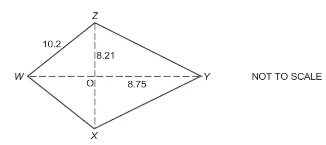
Calculate
(a.) YZ,
(b.) angle ZWX.
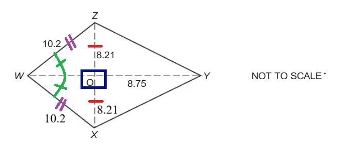
Let us use some properties of a kite to solve this question.
(1.) A kite has two pairs of adjacent equal sides:
$
|WX| = |WZ| = 10.2\;cm \\[3ex]
$
(2.) The short diagonal forms two isosceles triangles:
$
\text{short diagonal} = |XZ| \\[3ex]
|OX| = |OZ| = 8.21\;cm \\[3ex]
$
(3.) The long diagonal bisects the pair of vertex angles at its endpoints.
$
\text{long diagonal} = |WY| \\[3ex]
\angle ZWY = \angle XWY \\[3ex]
$
(4.) The diagonals of a kite always intersect at right angles.